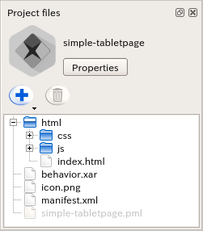
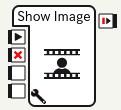
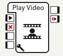
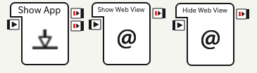

Using Pepper’s Tablet¶
The tablet can be used to display images, videos and webpages.
To control the tablet:
| Step | Action |
|---|---|
Package the files you want to show in your Application. For further details, see: Packaging tablet content in your application. |
|
Control the display on the tablet, using:
|
Packaging tablet content in your application¶
All content shown on the tablet must be hosted on the robot.
To do so:
| Step | Action |
|---|---|
| In the Project files panel, create a folder named “html”. | |
Import in this folder all the resources to display on the tablet: images, videos, webpages, javascript, etc. For example, if an application “simple-tabletpage” has these files:  |
|
| Install the Application on the robot. | |
Test the page. For example, to display index.html, visit:
|
{kind=link}
Let’s go into a bit more details for specific types of content:
Showing Images¶
Images are a good simple solution for displaying simple things on the tablet while keeping your application small and light. Images should be 1280 x 800 pixels to cover the full tablet screen. Animated gifs will be shown animated.
The tablet can preload images so that they are displayed more quickly.
To show images, use the Show Image box, specifying the relative path of the image in your “html” folder.
{kind=link}
The images are pre-loaded when the box loads.
You can also call ALTabletService::showImage, but in this case,
if you will have to handle the preloading yourself.
For further details, see: ALTabletService::preLoadImage.
Playing Videos¶
Videos are a good way of having a more punchy display while keeping your code simple. They should be at a resolution of 1280 x 800 pixels, with a h264/mp4 codec.
To play videos, use the Play Video box, specifying the relative path of the video in your “html” folder:
{kind=link}
You can also call ALTabletService.playVideo and other ALTabletService functions for stopping, pausing, etc. - for the full reference, see the ALTabletService API.
A note on sound: If the video has sound, it will come from the tablet’s speakers and not the robot’s. Therefore in most cases we recommend that you use videos without sound, unless you really want the sound to come from the tablet and not the robot.
Showing Webpages¶
Webpages give you more flexibility for making any kind of tablet content, however, there is a risk of making your application’s code more complex.
You might want to display two kinds of webpages:
- Webpages packaged in your application’s html folder, in which case you should put a “index.html” in your app’s “html” folder.
- Webpages from the internet, as the tablet is connected to the internet in normal usage.
To display a webpage, use the Show App box, which will show your application’s index.html. You can also use Show Webview and Hide Webview to hide / show the page, so that you can temporarily hide the page and then come back to it later without it needing to reload.
{kind=link}
You can also directly call ALTabletService::loadUrl and other similar functions.
Note that you will need to first call loadUrl or loadApplication, and then call showWebview
- for the full reference, see the ALTabletService API.
There is some special care you will need for making webpages for the tablet:
The tablet has a relatively slow CPU, so many events and animations will not be as responsive as they would be on a browser. This can be a problem if you use a “heavy” JavaScript framework.
In order to be compatible with any current and future screen density and browser display resolution, you should do your best to create or select responsive content.
However, if it is note possible, you could solve density issue on one specific robot by adding this line in the head section of your content:
<meta name="viewport" content="width=1280, user-scalable=no" />
It will fix the resolution of the webpage to 1280px (current native resolution).
One of the main advantages of webpages is that you can use: JavaScript SDK, which allows you to directly call NAOqi services from JavaScript.
Reacting to Touch Events¶
There are two approaches to detecting that the tablet has been touched:
- By using the Touch Detection box, or equivalently ALTabletService.onTouchDown, onTouchUp and onTouchMove signals
- By displaying a webpage that handles touch events in javascript, with buttons etc. (in this case, some libraries such as FastClick can help compensate the slow reactivity of tablet clicks).
Note that the first solution will give you the quickest robot reaction, but however handling touch in JavaScript will allow you to give better visual feedback on the tablet.